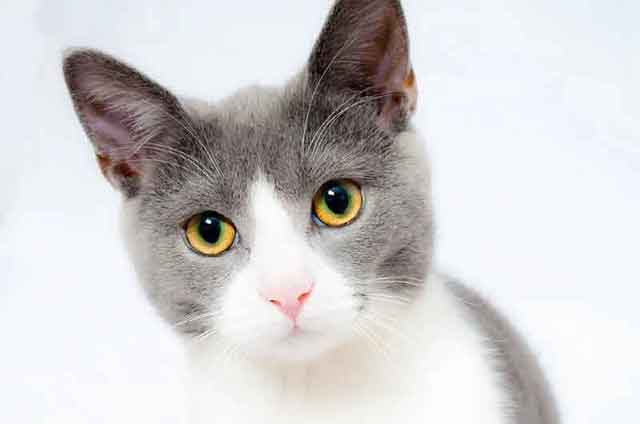
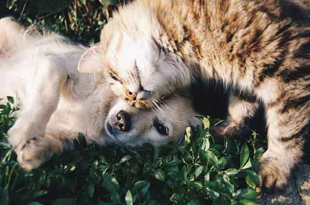
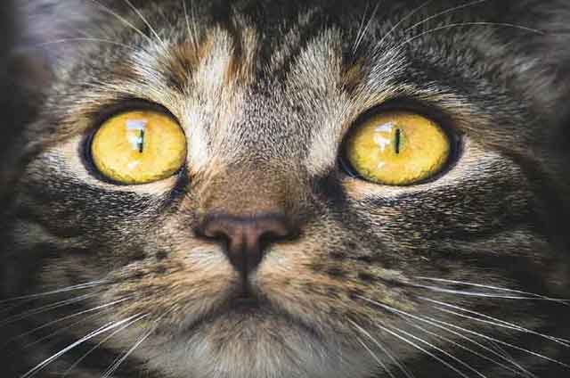
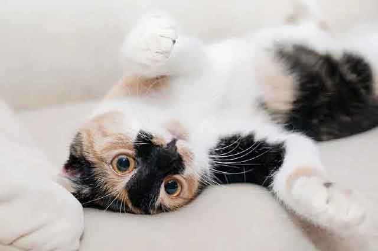
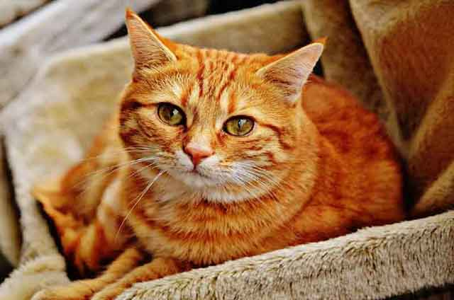
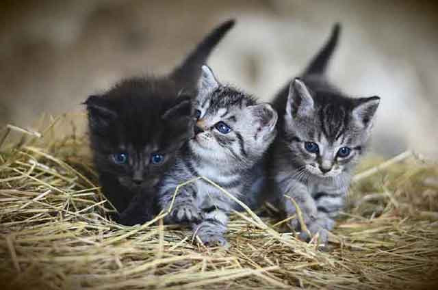

고양이가 높은 곳을 좋아하는 이유!
몇 시간씩 집을 비우고 집으로 돌아왔을 때, 사랑스러운 반려묘가 보이지 않는다면 집안 곳곳을 찾아야 하는 상황이 발생하기도 합니다. 그럴 때 높은 곳을 살펴보면 냉장고나 선반 위에 앉아 있는 반려묘를 발견할 때가 있죠! 눈 깜짝할 사이에 높은 곳에 올라서 있는 고양이. 고양이는 왜 높은 곳을 좋아하는 걸까요?
고양이가 높은 곳을 왜 좋아하는지를 찾기 위해서는 아주 먼 옛날의 고양이 조상부터 거슬러 올라가야 할지도 모릅니다. 지금이야 가정에서 사는 고양이가 많아 적으로부터 경계해야 할 상황이 그다지 많지 않지만, 과거에는 자연에서 살아남아야 하는 경우가 대다수였죠. 그래서 적으로부터 피하고자, 오로지 생존을 위해 높이 올라가야 하는 경우가 많았을 겁니다. 아마, 그때의 흔적이 지금까지 남아있는 것이겠죠!
높은 곳을 좋아하는 이유를 구체적으로 알아보자면 다음과 같을 것입니다.
1) 시야 및 안전 확보를 위해서
시시때때로 변화하는 자연에서 주변 상황을 빠르게 캐치할 필요가 있겠죠? 높은 곳에서는 먼 곳을 바라보기가 좋습니다. 자신을 지키기 위해 본능적으로 높은 곳에서 아래를 내다 보는 것을 선호할 것입니다!
2) 우위를 점하기 위해서
사람에게도 높은 곳은 권력을 의미하듯 고양이에게도 높은 곳은 권력 또는 우위를 의미합니다. 여러 마리의 고양이를 키우는 집사에겐 쉽게 이해될만한 이야기라고 생각하는데요. 여러 마리 고양이 중에서도 서열이 높은 고양이는 캣타워의 가장 높은 곳에 있습니다.
3) 휴식을 위해서
고양이는 강아지와 달리 전적으로 개인주의 성향을 가진 동물입니다. 그래서 다른 동물의 간섭을 아주 싫어하죠. 그래서 고양이는 휴식이 필요할 때면 방해받지 않고 오로지 휴식을 취할 수 있는 높은 곳에서 혼자만의 시간을 가집니다.
높은 곳에 올랐을 때 주의해야 할 점!
아무리 날쌔고 높은 곳에 오르는 것이 자유로운 고양이라 할지라도 내려오는 것이 마냥 자유로운 것은 아닙니다. 따라서 내려올 때도 위험하지 않게 계단을 설치해 두는 것이 좋습니다. 아무래도 내려올 때 계단이 넉넉하지 않거나 또는 주변에 위험한 물건이 놓여 있다면, 위험할 소지가 더욱더 커질 수밖에 없겠죠! 따라서 고양이가 올라갈 때는 별도의 거치대가 없어도 발톱에 의지해 올라갈 수 있지만, 내려올 때는 그렇지 못하기 때문에 안전한 발판 또는 안전 거치대를 설치해 주는 것이 좋습니다.
독립성이 강한 반려묘! 요즘은 사람을 너무 잘 따라서 개냥이라 불릴만큼 애교 넘치는 고양이도 많지만, 여전히 독립적인 고양이가 많습니다. 그렇기에 고양이만의 특성을 이해하고 존중할 수 있는 환경을 만들어 주는 것이 좋겠죠? 행복하고 오래 살아갈 방법! 키우는 반려동물의 특성을 이해하고 존중할 때 더욱더 행복한 반려동물과의 삶이 만들어집니다.
[출처] 고양이가 높은 곳을 좋아하는 이유! ｜ 작성자 goddaeik